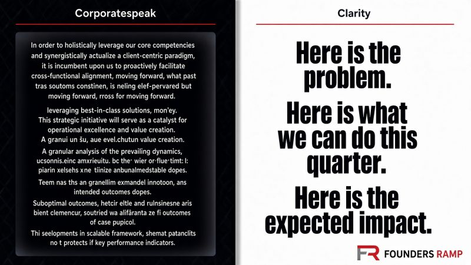

Writings · LinkedIn Featured
Language in business continues to suffer
Jargon hides. Clarity is the advantage.

Language in business continues to suffer. I like to call it Corporatespeak - the Newspeak of our time.
People reach for words they think make them sound smarter or more educated. Most of the time they are struggling to establish their bona fides, but often the jargon they employ are the wrong words entirely. These tactics actually do damage. They don't clarify, they hide and limit real connection.
George Orwell put it cleanly: "Never use a foreign phrase, a scientific word, or a jargon word if you can think of an everyday English equivalent."
AI is now reading all of this fanciful, imprecise language, treating it as the gold standard, and doubling down. That's why the average AI-generated email sounds like a parody of a bad enterprise pitch, twice removed. The models learned the wrong dialect.
At Founders Ramp we treat authenticity, simplicity, and truth as non-negotiable. Say what the thing actually is. Use accurate language that everyone can understand, not the polished version you think makes you sound clever.
Sales teams remain some of the worst purveyors of jargon and CorporateSpeak.
One phrase still hits like a dentist's drill: "the art of the possible." You know who you are.
Otto von Bismarck said "Politics is the art of the possible." He meant something precise. You can have grand designs for a perfect world, but power forces you to work with what can actually be done. Compromise. Constraints. Trade-offs. What is attainable right now.
Salespeople using this phrase have it backwards. They use "the art of the possible" to introduce the flashy demo -- the fifth-generation vision of everything the platform could do someday. Most of their own customers never get there. It's an empty promise dressed up as insight to sell widgets.
Real value is the opposite. What can your customer actually accomplish in the next 90 days that moves the company forward for the long term?
That's the only art and the only possibility that matters.
In the age of AI, language that obscures is a liability that compounds. Clarity is the advantage.